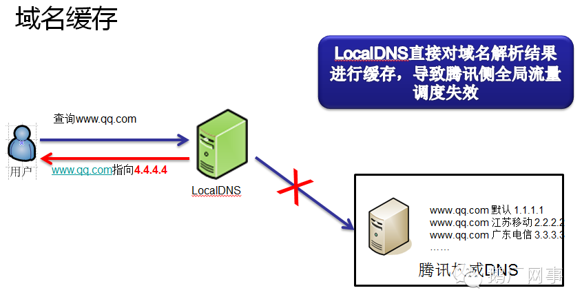
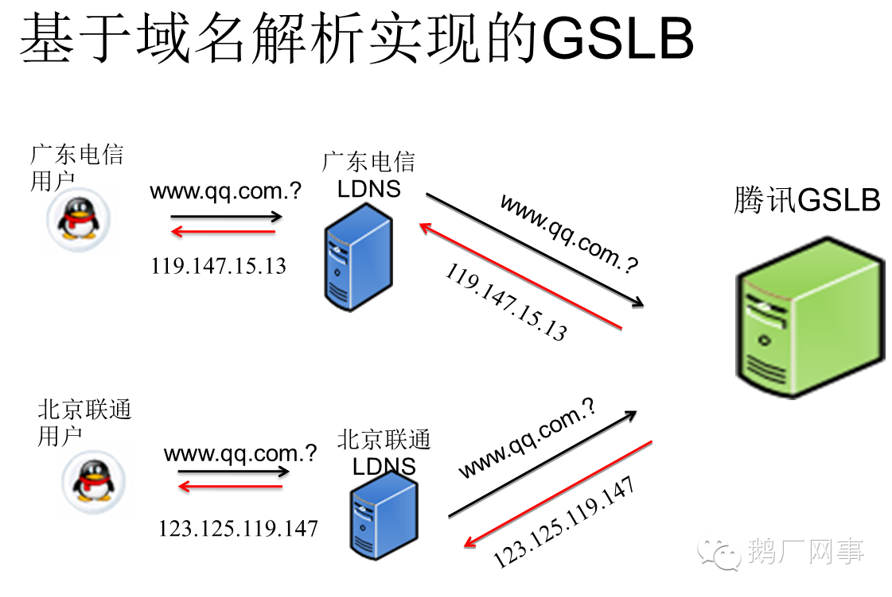
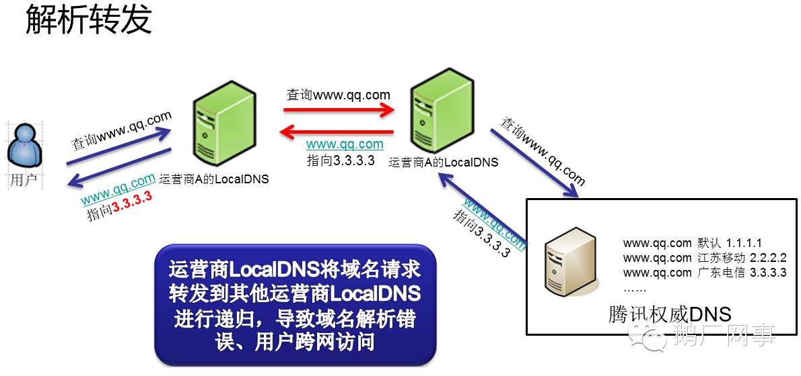
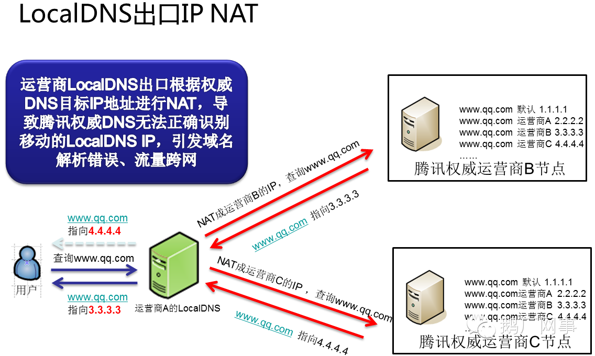
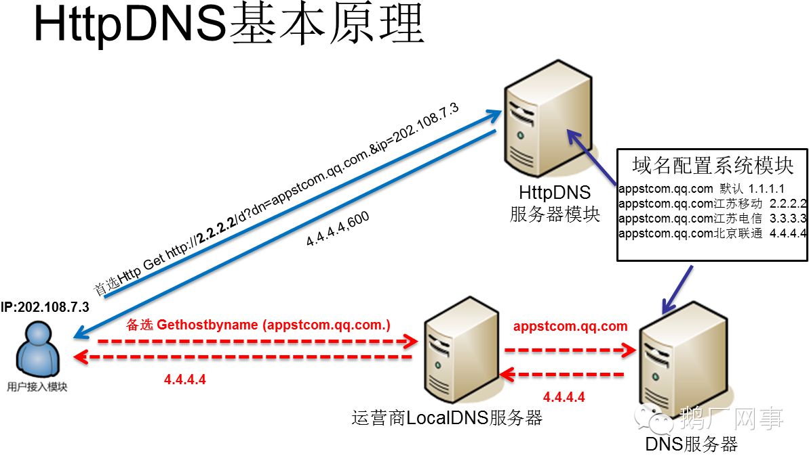

但凡使用域名来给用户提供服务的互联网企业，都或多或少地无法避免在有中国特色的互联网环境中遭遇到各种域名被缓存、用户跨网访问缓慢等问题。那么对于腾讯这样的域名数量在10万级别的互联网公司来讲，域名解析异常的情况到底有多严重呢？每天腾讯的分布式域名解析监测系统在不停地对全国所有的重点LocalDNS进行探测，腾讯域名在全国各地的日解析异常量是已经超过了80万条。这给腾讯的业务带来了巨大的损失。为此腾讯建立了专业的团队与各个运营商进行了深度沟通，但是由于各种原因，处理效率及效果均不能达到腾讯各业务部门的需求。除了和运营商进行沟通，有没有一种技术上的方案，能从根源上解决域名解析异常及用户访问跨网的问题呢？
一、问题根源：
要解决问题，我们得先得了解下现在国内各ISP的LocalDNS的基本情况。国内运营商LocalDNS造成的用户访问异常可以归为下三类：
1、域名缓存：
域名缓存很好理解，就是LocalDNS缓存了腾讯的域名的解析结果，不向腾讯权威DNS发起递归，示意图如下：

为何LocalDNS要把域名解析结果进行缓存呢？原因有以下几个：
（1）保证用户访问流量在本网内消化：国内的各互联网接入运营商的带宽资源、网间结算费用、IDC机房分布、网内ICP资源分布等存在较大差异。为了保证网内用户的访问质量，同时减少跨网结算，运营商在网内搭建了内容缓存服务器，通过把域名强行指向内容缓存服务器的IP地址，就实现了把本地本网流量完全留在了本地的目的。
（2）推送广告：有部分LocalDNS会把部分域名解析结果的所指向的内容缓存，并替换成第三方广告联盟的广告。
这种类型的行为就是我们常说的域名缓存，域名缓存会导致用户产生以下的访问异常：
A、仅对80端口的http服务做了缓存，如果域名是通过https协议或其它端口提供服务的，用户访问就会出现失败。比如支付服务、游戏通过指定端口连接connect server服务等。
B、缓存服务器的运维水平参差不齐，时有出现缓存服务器故障导致用户访问异常的问题。
2、解析转发：
除了域名缓存以外，运营商的LocalDNS还存在解析转发的现象。解析转发是指运营商自身不进行域名递归解析，而是把域名解析请求转发到其它运营商的递归DNS上的行为。正常的LocalDNS递归解析过程是这样的：

而部分小运营商为了节省资源，就直接将解析请求转发到了其它运营的递归LocalDNS上去了：

这样的直接后果就是腾讯权威DNS收到的域名解析请求的来源IP就成了其它运营商的IP，最终导致用户流量被导向了错误的IDC，用户访问变慢。
3、LocalDNS递归出口NAT：
LocalDNS递归出口NAT指的是运营商的LocalDNS按照标准的DNS协议进行递归，但是因为在网络上存在多出口且配置了目标路由NAT，结果导致LocalDNS最终进行递归解析的时候的出口IP就有概率不为本网的IP地址：

这样的直接后果就是GSLB DNS收到的域名解析请求的来源IP还是成了其它运营商的IP，最终导致用户流量被导向了错误的IDC，用户访问变慢。
二、现有的解决方案及存在的问题：
运营商的LocalDNS解析域名异常，给对用户访问腾讯业务的体验造成了非常大的损害。那么我们是如何处理这些域名解析异常的问题的呢？
1、实时监控+商务推动：
这种方案是目前腾讯的运营团队一直在使用的方案。这种方案就是周期比较长，毕竟通过行政手段来推动运营商来解决这个问题是比较耗时的。另外我们通过大数据分析，得出的结论是Top 3的问题用户均为移动互联网用户。对于这部分用户，我们有什么技术手段可以解决以上的问题呢？
2、绕过自动分配DNS，使用114dns或Google public DNS：
这个方案看上去很美好，114dns是国内最大的中立缓存DNS，而Google又是秉承不作恶理念的互联网工程帝国巨鳄，而且腾讯的权威DNS又支持edns-client-subnet功能，能直接识别使用Google publicDNS解析腾讯域名的用户的IP地址，不会出现流量调度失效。但是问题来了：
（1）如何在用户侧构造域名请求：对于PC端的客户端来说，构造一个标准的DNS请求包并不算什么难事。但在移动端要向一个指定的LocalDNS上发送标准的DNS请求包，而且要兼容各种iOS和android的版本的话，技术上是可行的，只是兼容的成本会很高。
（2）推动用户修改配置极高：如果要推动用户手动修改PC的DNS配置的话，在PC端和手机客户端的WiFI下面还算勉强可行。但是要用户修改在移动互联网环境下的DNS配置，其难度不言而喻。
3、完全抛弃域名，自建connectcenter进行流量调度：
如果要采用这种这种方案的话，首先你就得要拿到一份准确的IP地址库来判断用户的归属，然后再制定个协议搭个connect center来做调度，然后再对接入层做调度改造。这种方案和2种方案一样，不是不能做，只是成本会比较高，尤其对于腾讯这种业务规模如此庞大的公司而言。
三、利用HttpDNS解决用户域名解析异常：
既然上面的方案都存在那么多的问题，那有没有一种调度精准、成本低廉、配置方便的基于域名的流量调度系统呢？答案是肯定的。腾讯公司的GSLB 团队推出了一种全新的域名解析调度系统：HttpDNS。HttpDNS是为移动客户端量身定做的基于Http协议和域名解析的流量调度解决方案，专治LocalDNS解析异常以及流量调度不准。详细介绍如下：
（1）HttpDNS基本原理：

HttpDNS的原理非常简单，主要有两步：
A、客户端直接访问HttpDNS接口，获取业务在域名配置管理系统上配置的访问延迟最优的IP。（基于容灾考虑，还是保留次选使用运营商LocalDNS解析域名的方式）
B、客户端向获取到的IP后就向直接往此IP发送业务协议请求。以Http请求为例，通过在header中指定host字段，向HttpDNS返回的IP发送标准的Http请求即可。
（2）HttpDNS优势：
从原理上来讲，HttpDNS只是将域名解析的协议由DNS协议换成了Http协议，并不复杂。但是这一微小的转换，却带来了无数的收益：
A、根治域名解析异常：由于绕过了运营商的LocalDNS，用户解析域名的请求通过Http协议直接透传到了腾讯的HttpDNS服务器IP上，用户在客户端的域名解析请求将不会遭受到域名解析异常的困扰。
B、调度精准：HttpDNS能直接获取到用户IP，通过结合腾讯自有专利技术生成的IP地址库以及测速系统，可以保证将用户引导的访问最快的IDC节点上。
C、实现成本低廉：接入HttpDNS的业务仅需要对客户端接入层做少量改造，无需用户手机进行root或越狱；而且由于Http协议请求构造非常简单，兼容各版本的移动操作系统更不成问题；另外HttpDNS的后端配置完全复用现有权威DNS配置，管理成本也非常低。总而言之，就是以最小的改造成本，解决了业务遭受域名解析异常的问题，并满足业务精确流量调度的需求。
D、扩展性强：HttpDNS提供可靠的域名解析服务，业务可将自有调度逻辑与HttpDNS返回结果结合，实现更精细化的流量调度。比如指定版本的客户端连接请求的IP地址，指定网络类型的用户连接指定的IP地址等。
当然各位可能会问：用户将首选的域名解析方式切换到了HttpDNS，那么HttpDNS的高可用又是如何保证的呢？另外不同运营商的用户访问到同一个HttpDNS的服务IP，用户的访问延迟如何保证？
为了保证高可用及提升用户体验，HttpDNS通过接入了腾讯公网交换平台的BGP Anycast网络，与全国多个主流运营商建立了BGP互联，保证了这些运营商的用户能够快速地访问到HttpDNS服务；另外HttpDNS在多个数据中心进行了部署，任意一个节点发生故障时均能无缝切换到备份节点，保证用户解析正常。
四、接入效果及未来展望：
当前HttpDNS已在腾讯内部接入了多个业务，覆盖数亿用户，并已持续稳定运行超过一年时间。而接入了HttpDNS的业务在用户访问体验方面都有了非常大的提升。以某个接入HttpDNS的业务为例，该业务仅通过接入HttpDNS，在未做任何其它优化的情况下，用户平均访问延迟下降超过10%，访问失败率下降了超过五分之一，用户访问体验的效果提升非常显著。另外腾讯的HttpDNS服务除了在腾讯内部被广泛使用以外，也受到了业务同行的肯定。国内最大的publicDNS服务商114dns在受到腾讯DNS的启发下，也推出了HttpDNS服务。
在未来的日子里，腾讯GSLB团队将会在腾讯内部进一步推广HttpDNS服务，并将在实际业务的需求下对HttpDNS服务进行升级，如提供更为通用、安全、简单的接入协议，进一步提升接入用户的网络访问体验等等。希望HttpDNS能为各位在解决域名解析异常及全局流量调度失效方面提供一个简单、可行的思路，也欢迎各位业界同行与腾讯一起，就如何进行更精准的全局流量调度方面进行更为深入的讨论!